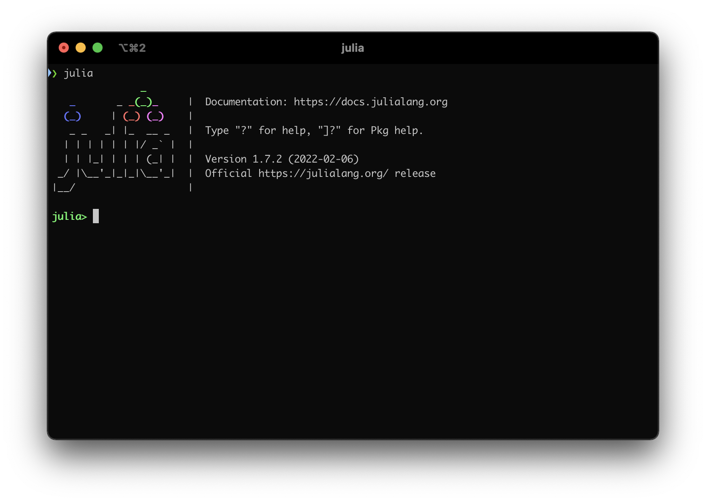
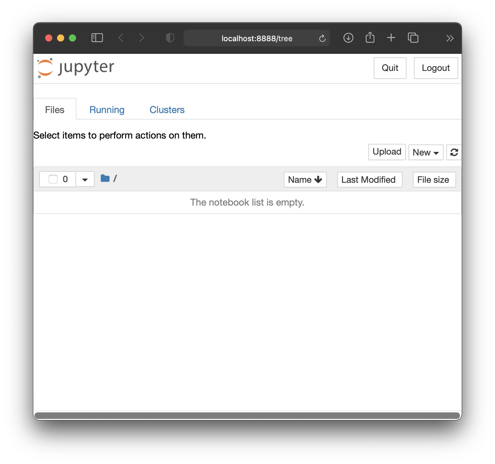
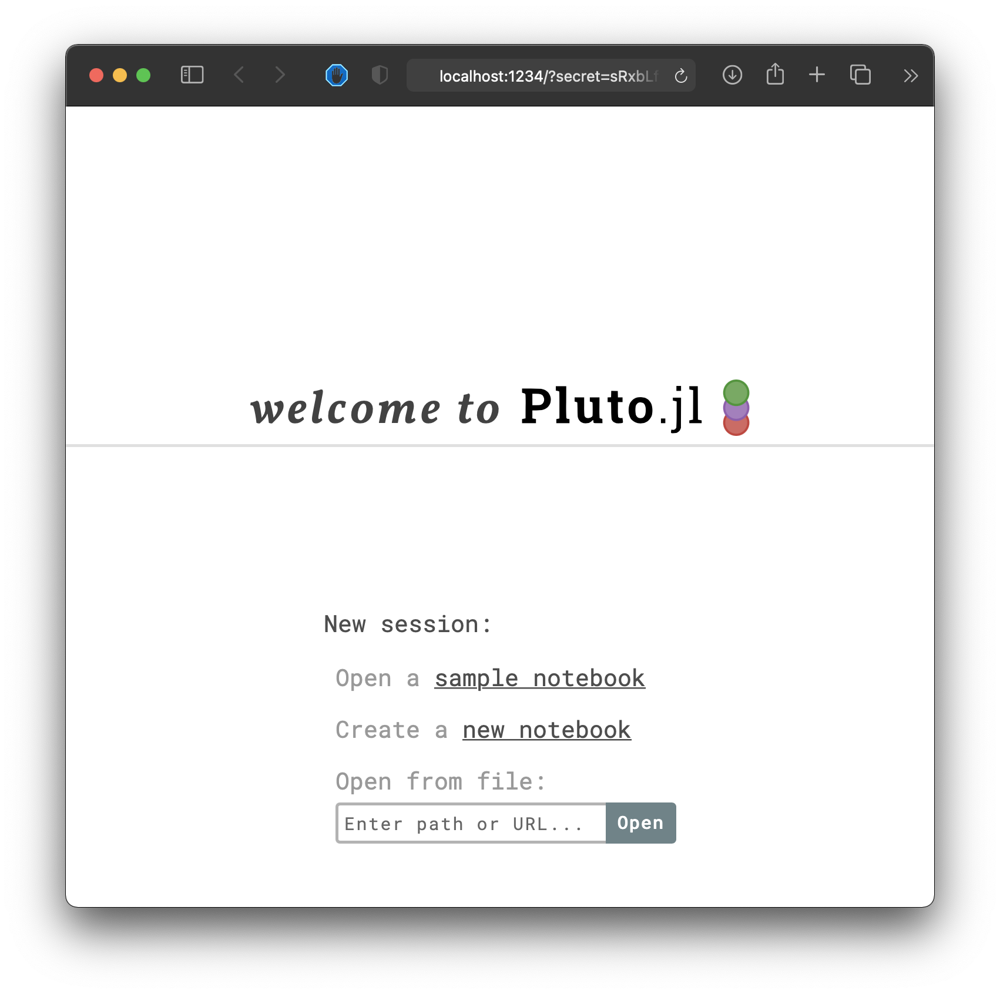

© Giuseppe Ragusa.
© Giuseppe Ragusa.
Go to https://julialang.org/downloads and download the current stable release, Julia 1.5.4, using the correct version for your operating system (Linux x86, Mac, Windows, etc).
After installing, make sure that you can run Julia. On some systems, this means searching for the "Julia 1.5.3" program installed on your computer; in others, it means running the command julia in a terminal.
Make sure that you can execute a simple command, like sin(3.14):

Next we will install Jupyter. Jupyter is a convenient web-based interface to interact with Julia.
Open the *Julia REPL**. This is the command-line interface to Julia, similar to the previous screenshot.
To install Jupyter, we want to run a package manager command. To switch from Julia mode to Pkg mode, type ] (closing square bracket) at the julia> prompt:
julia> ]
(@v1.5) pkg>The line turns blue and the prompt changes to pkg>. This prompt is telling you that you are now in package manager mode which allows you to do operations on packages (also called libraries).
To install Jupyter, run the following (case sensitive) command to add (install) the package to your system by downloading it from the internet. You should only need to do this once for each installation of Julia:
(@v1.5) pkg> add IJuliaIf everything goes as planned, you will get back to the package manager mode prompt. Press ESC to go back to the Julia prompt. Then load the library
using IJulia
notebook()With the first line we are loading (we are using) the IJulia package. The second line asks to start the notebook. However, is likely that you will get asked whether you want install Jupyter via Conda, y/n? [y]. This is when Jupyter, which is part of Python, is actually installed. This might take some time as several things have to be installed (python among other things). If everything goes well, your you will see your browser taking you to the Jupyter landing page:

From here you can create a new notebook.
To install Pluto, run the following (case sensitive) command from the package manager mode, that is, after you press ] from the REPL:
(@v1.5) pkg> add PlutoThis might take a couple of minutes, so you can go get yourself a cup of tea!
Then you can launch Pluto by first loading the package, and then starting a Pluto instance:
using Pluto
Pluto.run()As for Jupyter, you browser should get you to the Pluto landing page:

Note: We need a modern browser to view Pluto notebooks with. Firefox and Chrome work best.